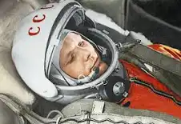
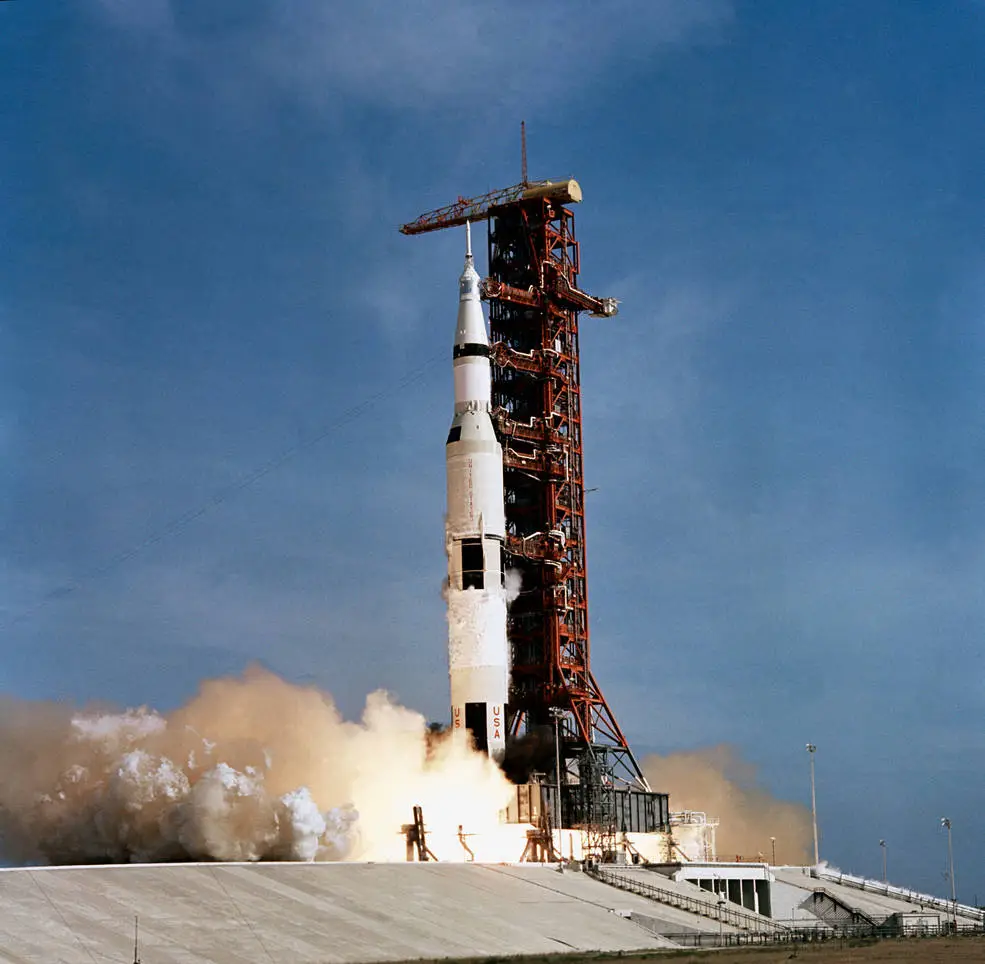

Przełomowe momenty w kosmosie

Sputnik 1
Pierwszy sztuczny satelita wystrzelony przez ZSRR w 1957 roku.

Jurij Gagarin
Pierwszy człowiek, który odbył lot w kosmos w 1961 roku.

Apollo 11
Pierwsze lądowanie na Księżycu w 1969 roku.

Marsjańskie Łaziki
Bezzałogowe misje badawcze na Marsie.

Teleskop Hubble'a
Teleskop kosmiczny uruchomiony w 1990 roku.

SpaceX Falcon 9
Nowoczesna rakieta wielokrotnego użytku.